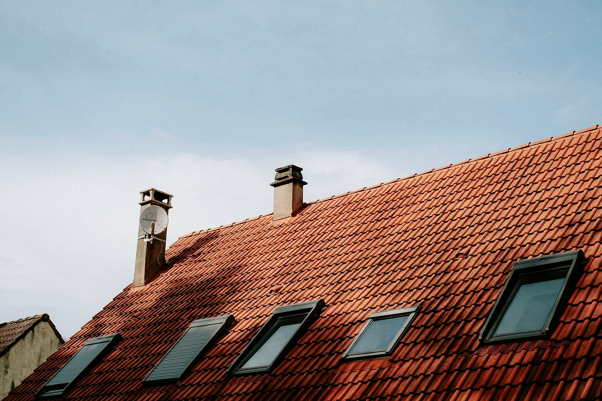
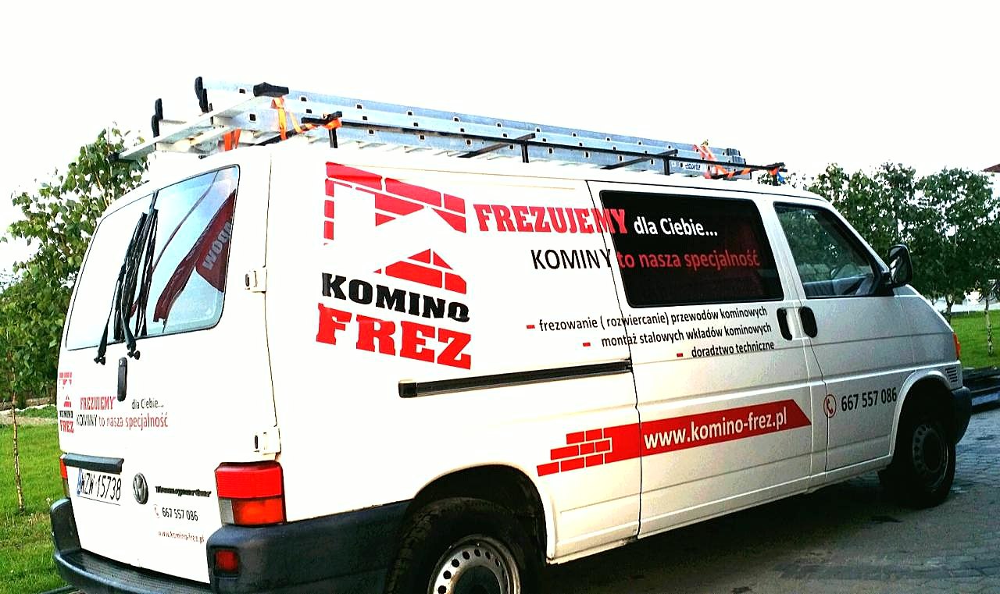
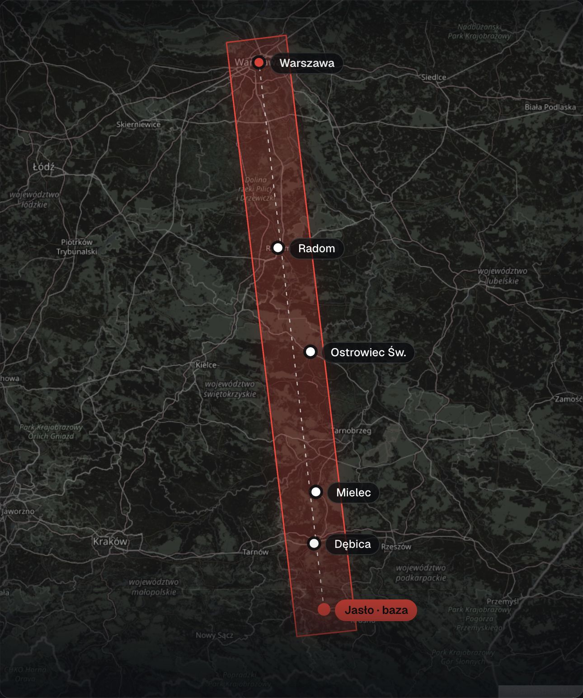

Frezowanie kominówod Jasła do Warszawy
Stary komin,nowy wkład.Bez rozbiórki.
Frezujemy kominy, montujemy wkłady ceramiczne i stalowe, udrażniamy zagruzowane przewody. Baza w Jaśle, zlecenia w pasie aż po Warszawę.
Czym się zajmujemy
Od frezupo podłączony piec.
Zajmujemy się wyłącznie kominami. Na zdjęciach nasze zlecenia.
Pełna oferta


Kto przyjedzie
Ekipa, którazna kominy.
Przyjeżdżamy firmowym busem ze sprzętem do frezowania. Na miejscu oglądamy przewód, dobieramy średnicę wkładu i podajemy cenę, zanim cokolwiek ruszymy.
Klienci w opiniach piszą o szybkim terminie i czystej pracy. Zdarza się, że ekipa wchodzi już dzień po telefonie.
Jak pracujemy
Wiesz, na czym stoisz.Na każdym etapie.
-
01 / 04
Telefon
Mówisz, jaki masz piec i co się dzieje z kominem. Ustalamy termin przyjazdu.
-
02 / 04
Oględziny komina
Sprawdzamy przewód i dobieramy wkład o właściwej średnicy. Cenę podajemy przed pracą.
-
03 / 04
Frezowanie i montaż
Frezujemy przewód, wpuszczamy wkład, robimy obróbkę na dachu i podłączenie.
-
04 / 04
Odbiór i porady
Na koniec pokazujemy, co zrobiliśmy, i podpowiadamy, jak palić, żeby komin służył latami.
Realizacje
Prostoz naszych zleceń.
Wkłady nad dachem, kominy przed frezowaniem i magazyn wkładów. Więcej kadrów w galerii.
Wszystkie realizacje


Oferta
Wszystko przy kominie,w jednych rękach.
Szczegóły każdej usługi są w ofercie. Zadzwoń, a powiemy, czy wystarczy udrożnienie, czy trzeba frezować i dać wkład.
Frezowanie kominów
Rozwiercamy przewód frezem, żeby zmieścił się wkład o potrzebnej średnicy. Komin zostaje na miejscu.
Wkłady ceramiczne
Montujemy wkłady ceramiczne w istniejących kominach, na przykład fi 180 do kotła na paliwo stałe.
Wkłady stalowe
Wkłady żaroodporne i kwaso-żaroodporne do kotłów gazowych, olejowych i na paliwo stałe.
Udrażnianie przewodów
Usuwamy zagruzowania, sadzę i gniazda kawek z przewodów dymowych, spalinowych i wentylacyjnych.
Podłączenie pieca
W jednym zleceniu: frezowanie, wkład, montaż i podłączenie kotła do komina.
Doradztwo techniczne
Pomagamy dobrać wkład do pieca i paliwa. Pracujemy na materiałach Zapel, Schiedel, MK i KNM.
Spółdzielnie i wspólnoty
Udrażnianie i frezowanie przewodów w blokach i kamienicach dla spółdzielni, wspólnot i firm.
Obszar działania
Od Jasłado Warszawy.
Baza jest w Jaśle. Jeździmy w pasie szerokim na 30 km, który biegnie prosto z Jasła do Warszawy: przez Podkarpacie, Świętokrzyskie i Mazowsze.
- Jasło
- Dębica
- Mielec
- Połaniec
- Ostrowiec Świętokrzyski
- Iłża
- Radom
- Warka
- Piaseczno
- Warszawa
- i miejscowości po drodze
Mieszkasz kawałek obok pasa? Zadzwoń i zapytaj, powiemy od razu, czy dojedziemy.

Opinie
Co pisząklienci.
Świetna, solidna firma, robi rzeczy wręcz nie możliwe. Nie oszczędzają siebie i sprzętu. Znają się na swoim fachu. Nawet najtrudniejszy komin nie jest dla nich straszny. Godni polecenia na 200%.
Gorąco polecam tę firmę! Zadzwoniłem w wtorek i usłyszałem, że może uda się w następnym tygodniu. Bardzo miłe zaskoczenie - telefon zwrotny, że ekipa może wejść już w środę.
Gorąco polecam firmę Komino-Frez! Panowie byli dzisiaj u mnie montować wkład do komina. Usługa została wykonana niezwykle sprawnie, czysto i z pełnym profesjonalizmem.
Z czym dzwonicie
Co się dziejez kominem?
Opisz problem przez telefon. Powiemy, czy wystarczy udrożnienie, czy trzeba frezować i dawać wkład.
Komin jest za wąski na wkład
Frezujemy przewód do średnicy, której potrzebuje wkład. Komin zostaje na miejscu, bez rozbierania i bez kucia ścian w domu.
Wymieniam kocioł albo piec
Dobieramy wkład do kotła i paliwa, frezujemy, montujemy i podłączamy piec w jednym zleceniu.
Przewód jest zagruzowany
Usuwamy gruz i sadzę z przewodów dymowych, spalinowych i wentylacyjnych, także w blokach i kamienicach.
Komin nie ciągnie
Sprawdzamy przewód na miejscu. Czasem wystarczy udrożnienie, czasem trzeba frezować i dać wkład o innej średnicy.
W przewodzie jest gniazdo ptaków
Wyciągamy gniazda kawek i sprawdzamy, czy przewód jest drożny na całej długości.
Kontakt
Nowy piec albo kłopot z kominem?Jeden telefon.
Opowiedz, co się dzieje z kominem. Obejrzymy na miejscu i wycenimy, zanim zaczniemy.
+48 602 692 046